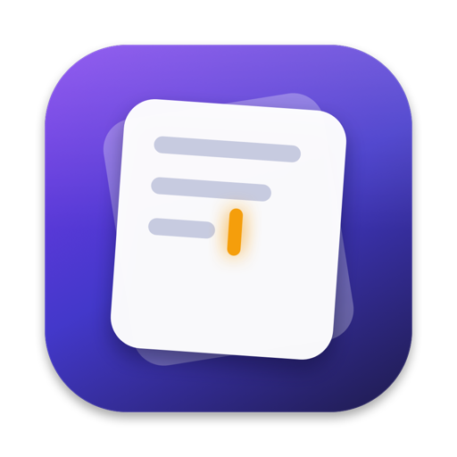

Rich text, Markdown speed
Headings, checklists, quotes, code, and links. Type # or - to format as you go.

BlinkA tiny, glassy notes window that floats over your work. Jot it down, hit ⌃⌥B when you need it again, and keep moving.
Tuesday · 4:32 PM
Use ⌃⌥B to bring Blink back from anywhere.
Keep it tiny. Keep it fast.
Rich text, workspaces, a real trash, and the Mac integrations that make it feel native.
Headings, checklists, quotes, code, and links. Type # or - to format as you go.
Separate sets of notes for personal, work, and whatever else. Duplicate or move notes between them.
Deleted notes survive relaunches and workspace switches. Restore one or empty the trash when you’re sure.
Search the current workspace or every note at once. Results show where each note lives.
⌃⌥B toggles Blink from any app. The menu bar extra can open a new note in one click.
Export Markdown, RTF, or HTML. Copy a note with formatting or as clean GitHub-flavored Markdown.
Daily backups, owner-only file permissions, corrupt-file recovery, and visible save errors.
No accounts, no analytics, no network requests. Your notes stay in a local JSON file.
System, serif, rounded, or monospaced text; 12–28 pt sizing; reduced motion and transparency support.
Everything important has a shortcut. The ⌘K panel shows the same list, searchable.
Blink writes one JSON file and keeps daily backups beside it. No database, no lock-in.
Open Settings → About → Reveal in Finder to jump straight there.
~/Library/Application Support/Blink/ ├── notes.json ├── Backups/ │ └── notes-2026-10-26.json └── notes.corrupt-<timestamp>.json (only if recovery is needed)
Free and open source under the MIT license.